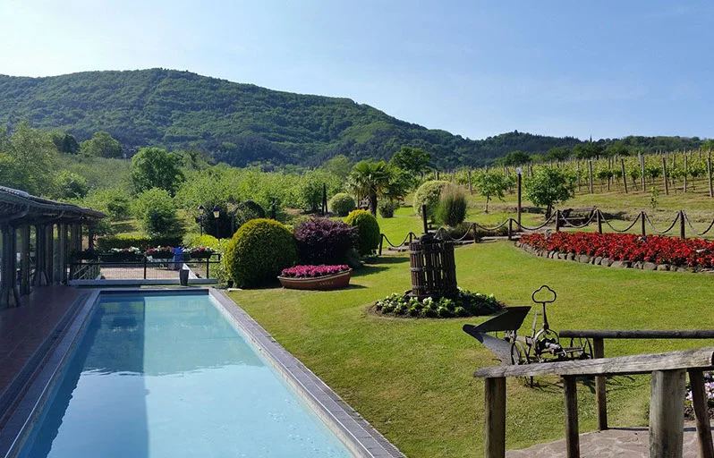
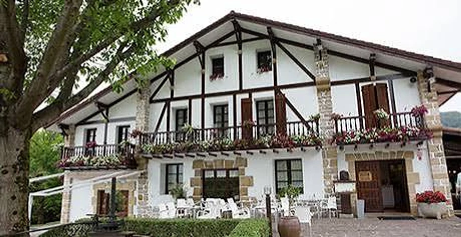

— Menú del día —
Cuatro primeros y cuatro segundos a elegir, rotatorios y de temporada. Postre, vino y café.
Martes a viernes a mediodía, salvo festivos
35 € / persona · IVA incluido
Reservar
Muestra preparada por OI Studio para Beko Errota, con los datos y fotos de su web. Sin compromiso.



Desde los años 80 · Barrio Jaizubia, Hondarribia
4,4 en Google · 903 opiniones

Nuestra historia
A comienzos de los años 80 la familia reformó un viejo molino del barrio Jaizubia, en Hondarribia, y desde entonces no ha parado de renovarlo. Más de cuarenta años de trayectoria.
Alrededor, el jardín, los viñedos y los olivos de los que salen su txakoli, su sidra y su aceite. Y dentro, cinco comedores que se combinan, de una comida íntima a un congreso de 750 personas.
Para sentarse a la mesa

Qué encontraréis
De la finca a la mesa
El lugar



Bodas y eventos
Lunch en el jardín, banquete en cinco comedores que se combinan y recena de pintxos para quien quiera seguir de fiesta.